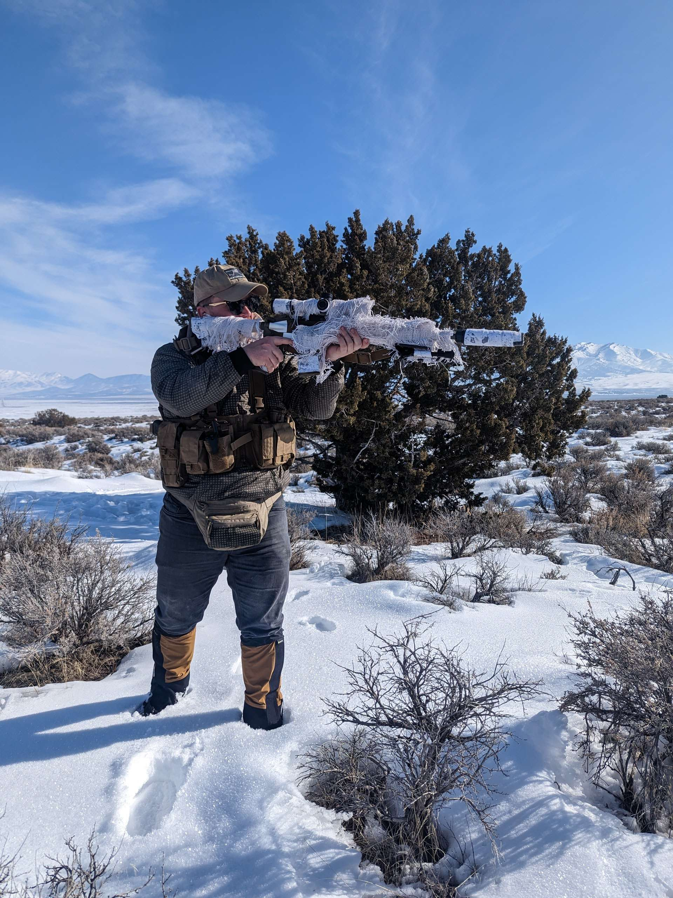

My name is Marshall Bogues, I am a cyber security professional, and a firearms enthusiast. Below is a photo of me out shooting my M110K1 clone. Here is a link to a website discussing the M110, though it isn't the K1 variant.

I also do a bit of coyote hunting, here is a photo from a few weeks ago. The rifle I'm holding is one I put together myself, while it isn't a clone I took a bit of inspiration from the MK12 rifle used by NAVSOC as well as other SOCOM elements, Here is a link to that as well.
